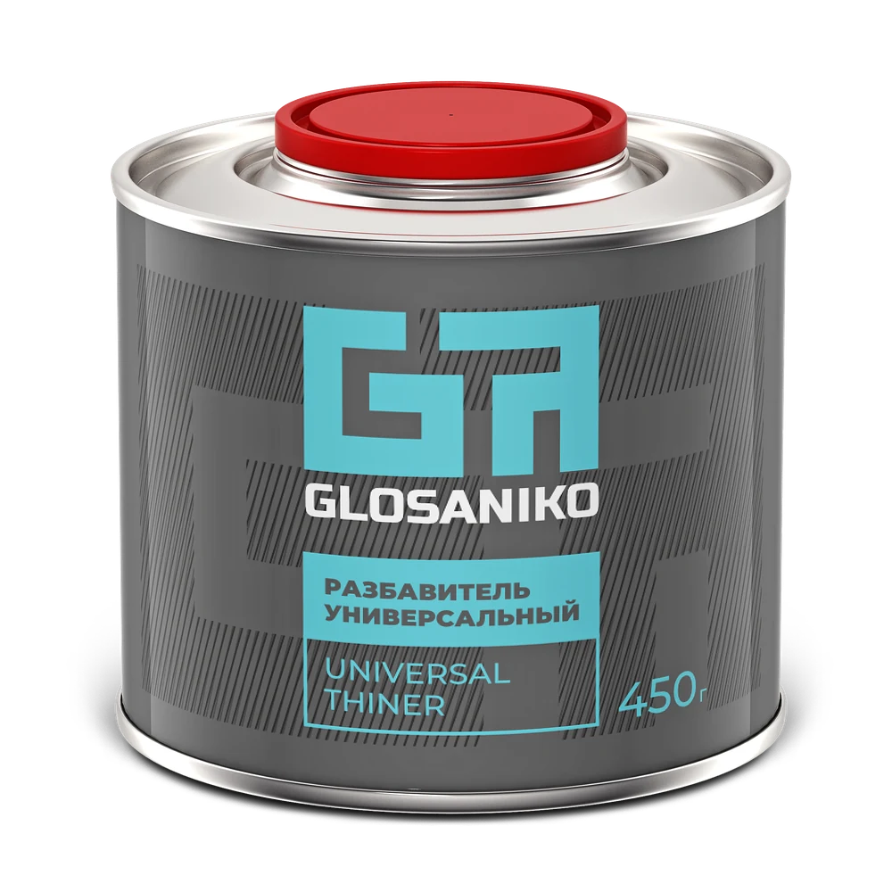

Напрямую с производителем
Glosaniko — бренд ООО «ПРОКРАСИМ». Регион и формат работы вы обсуждаете с компанией, которая производит материалы
Glosaniko работает с дилерами и развивает партнёрскую сеть. Обсудим сотрудничество с вашим бизнесом напрямую с производителем
Обсудить сотрудничество ↗


Дилеры и торговые организации — основная коммерческая аудитория производителя. Сотрудничество строится вокруг понятной линейки и прямого общения с компанией
Glosaniko — бренд ООО «ПРОКРАСИМ». Регион и формат работы вы обсуждаете с компанией, которая производит материалы
Эмаль, отвердитель и разбавитель образуют одну продуктовую систему. Это помогает последовательно представить ассортимент покупателю
Палитра Glosaniko расширяется на основании запросов клиентов. Развитие линейки учитывает потребности тех, кто работает с продукцией
Обсуждение сотрудничества с представителем производителя
Взаимосвязанные материалы, которые удобно представлять вместе: эмаль, отвердитель и разбавитель
Линейку оттенков, которая дополняется по запросам клиентов
Понятное позиционирование для профессиональных мастеров и покупателей, выполняющих окраску самостоятельно
Имя и телефон для связи с вами
Регион и подходящий формат работы
Согласовать условия и перейти к сотрудничеству
Оставьте контакты, чтобы представитель Glosaniko связался с вами. Регион, формат работы и условия обсудим индивидуально
ООО «ПРОКРАСИМ»